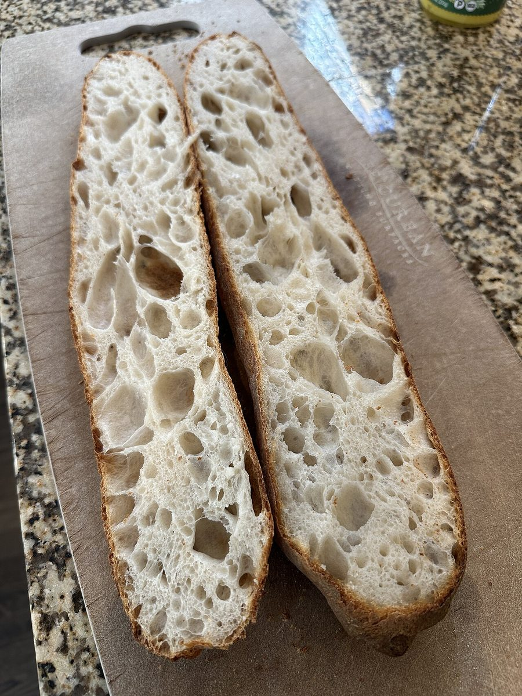
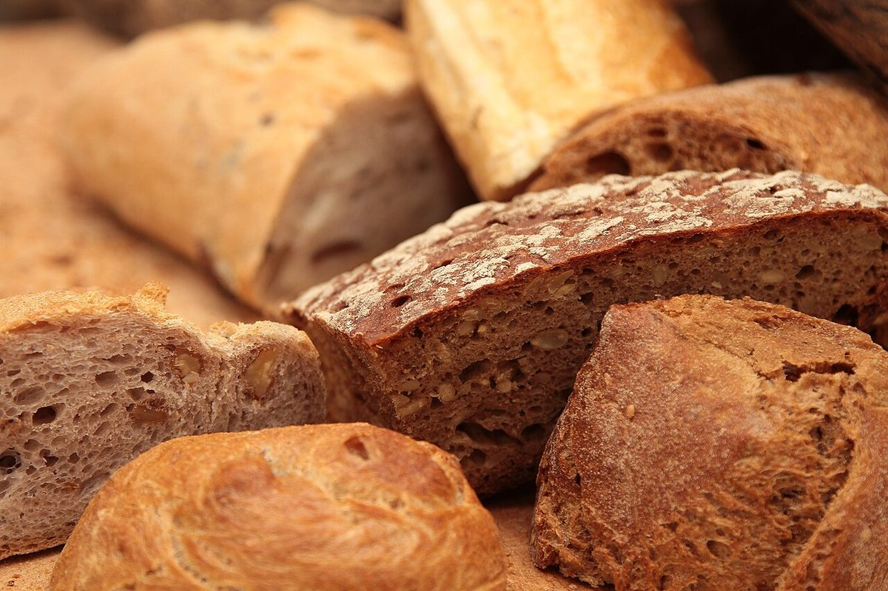
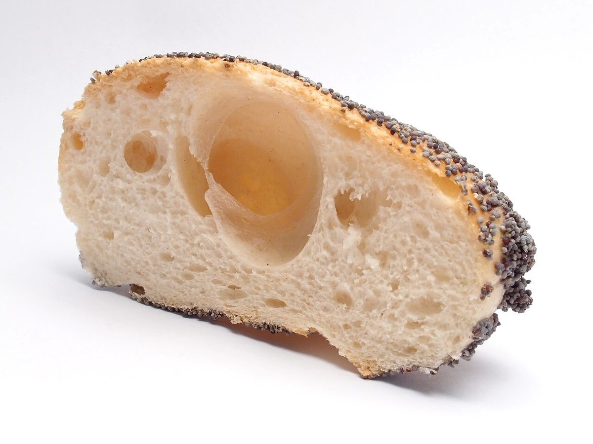

メニュー
メニュー
メニューと価格は準備中です。確認でき次第、こちらに掲載します。
| メニュー | 準備中 |
|---|---|
| 価格 | 準備中 |
| ご予約 | 準備中 |
下の写真と言葉は「パン辞典」の続きで、パンの雰囲気を伝えるためのフリー素材と、制作側が選んだ言葉です。お店で提供しているものではなく、提供メニューを示すものでもありません。



- BButter バター
パンや焼き菓子づくりでおなじみの材料。アルミ箔の上のバターのかたまり。
- AAmber アンバー
琥珀色に焼けた丸いパン。網の上で冷ましているところの写真です。
- KKnife-cut ナイフの切れ込み
表面に十字や線の切れ込みが入った小さなパンの天板。
- EExterior エクステリア
焼けた皮の表面をぐっと寄って見た写真。細かな穴や焼き色の濃淡が見えます。
- SSlice スライス
切り分けたパンのかけらが重なった写真。
- HHole ホール(気泡)
断面にぽっかり大きな気泡が開いた、ケシの実つきの小さなパン。